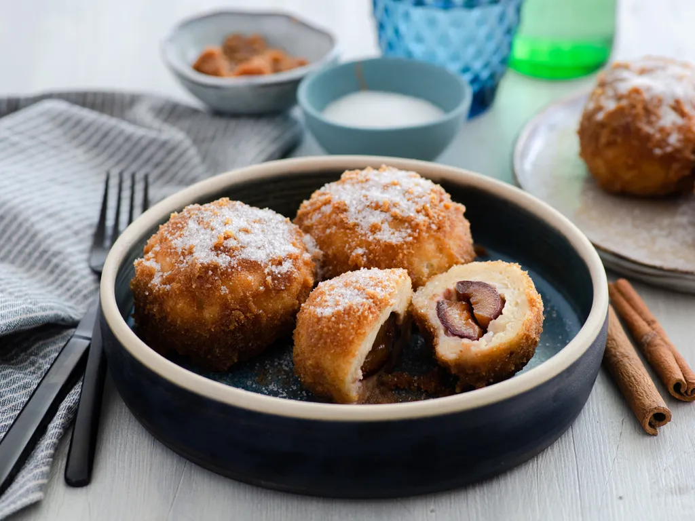

Dumplings with plums and cinnamon

Description
The sweet dumplings with plums and baked bread crumbs with cinnamon
reminds you on your childhood and are always expected on the plate.
Ingredients
- 1 kg of potatoes
- little salt
- 80 g of butter
- 1 egg
- 250 g of wheat flour
- 20 g of ripen plums
- 50 g of sugar
- 1 tablespoon of cinnamon
- 60 g of butter
- 50 g of bread crumbs
- 2 vanilla sugar
How to do it
- Peel the potatoes and boil them then make mashed with a pinch of salt and butter.
Leave it until it cools down.
- After the mashed potatoes cooldown add an egg and flour if needed until the dough
stops being sticky. Split the dough into 20 balls
- Clean the plums and put a tablespoon of sugar mixed with cinnamon into each of them.
- Around every filled plum wrap the dough and make it into a dumpling.
- Put the dumplings into boiling water. Boil them until they float up to the surface and then 2 miutes more (in total around 10 minutes).
- On heated butter bake the bread crumbs, add vanilla sugar.
Dry the dumplings and roll them into the bread crumbs,
Back